药市通功能模块分为自选、行情、产品、医院、个人中心五大模块，其中，产品和医院两个模块正在建设当中。
行情模块从多个角度展现区域市场总体表现的全景，页面从上至下分为地市及时间切换区域、中西药市场、分类涨幅榜、概念涨幅榜、品种影响力排行榜五个部分。
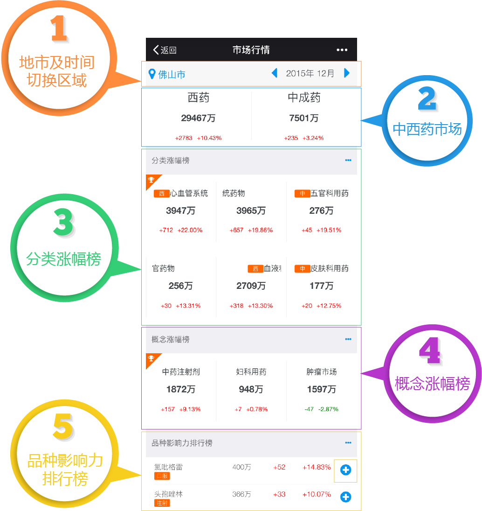
地市默认用户所在地市，时间默认数据最新年月。
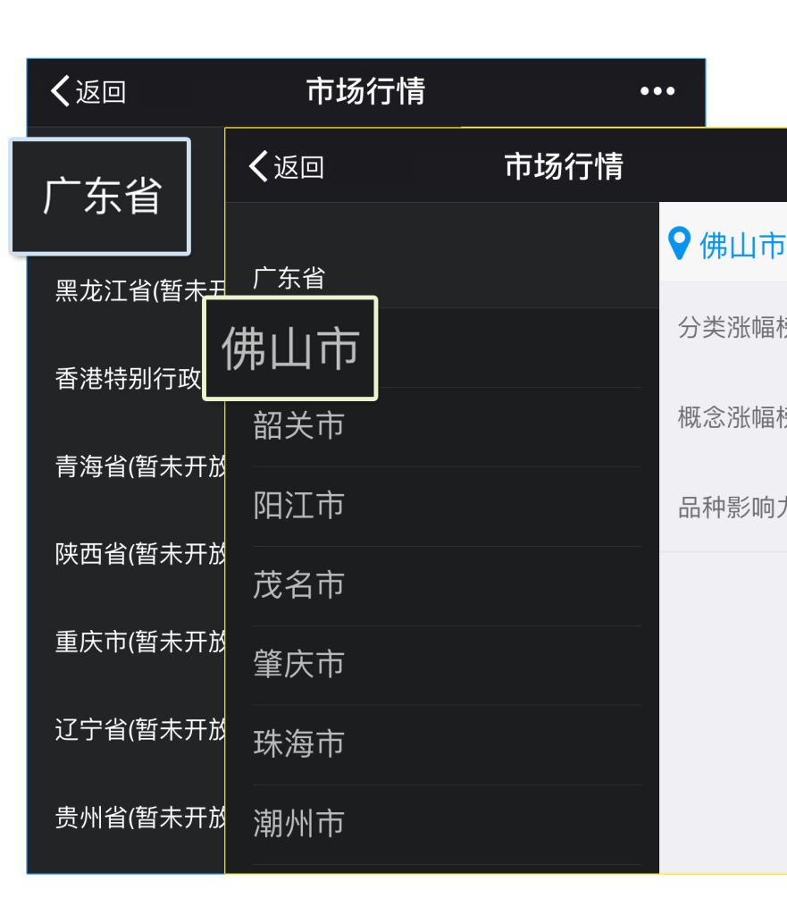
中西药市场从左到右由上至下分别显示西药、中成药当月市场规模、环比增长额及环比增长率（比上月）。
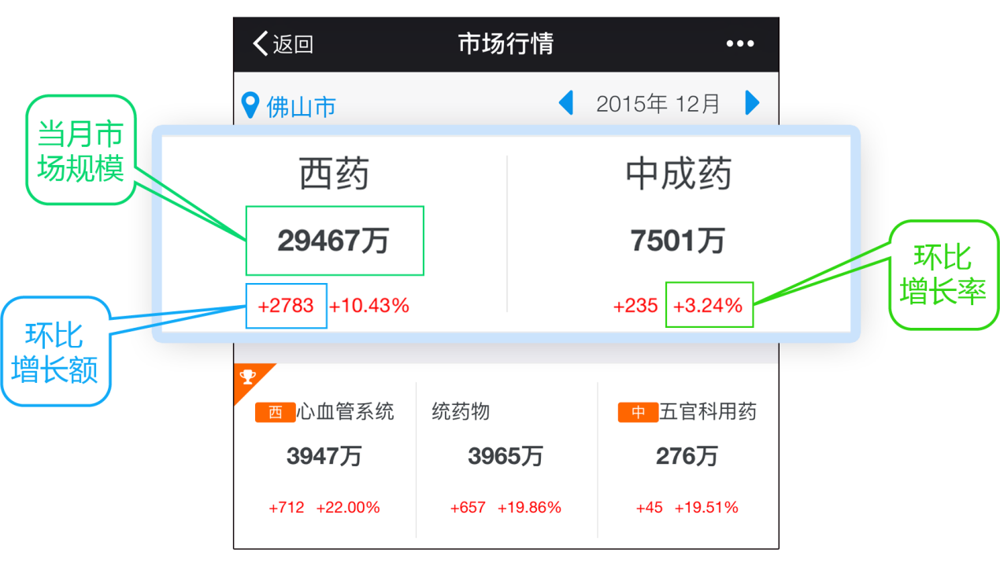
点击【….】查看所有一级药理分类，点击具体分类可查看相应分类的品种列表。
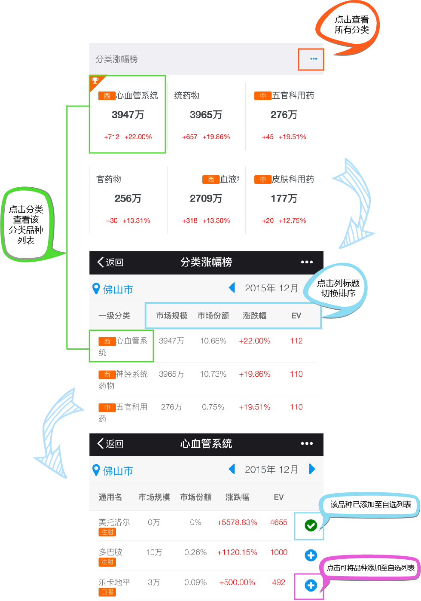
点击【….】查看所有概念涨市场，点击具体概念市场可查看相应概念市场的产品列表。其他操作同分类涨幅榜。
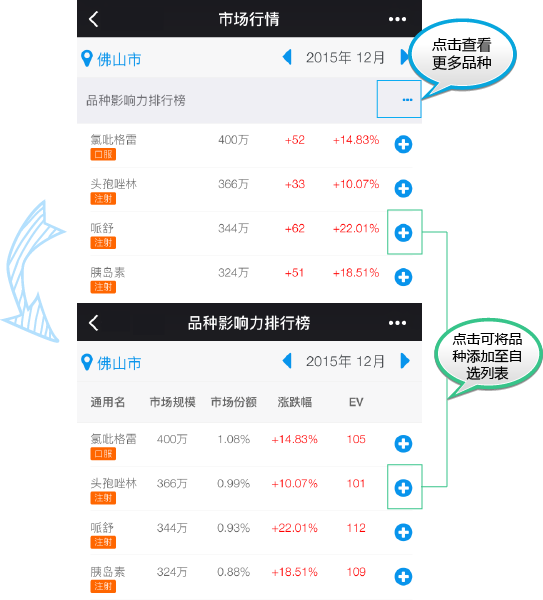
指标说明：
①、已选医院： 已选择医院数 / 该品种医院总数；
②、解锁医院： 已解锁医院数 / 已选择医院数；
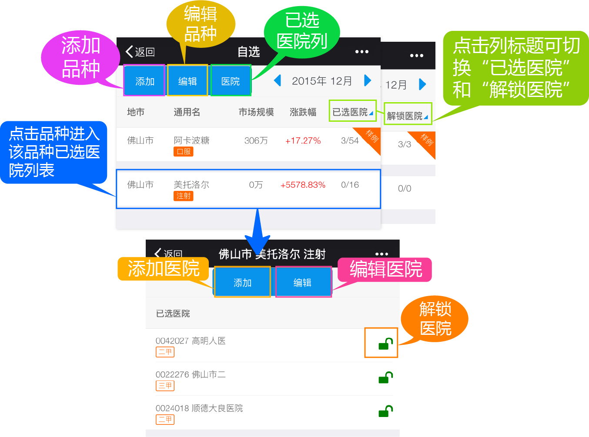
自选模块中的操作流程：
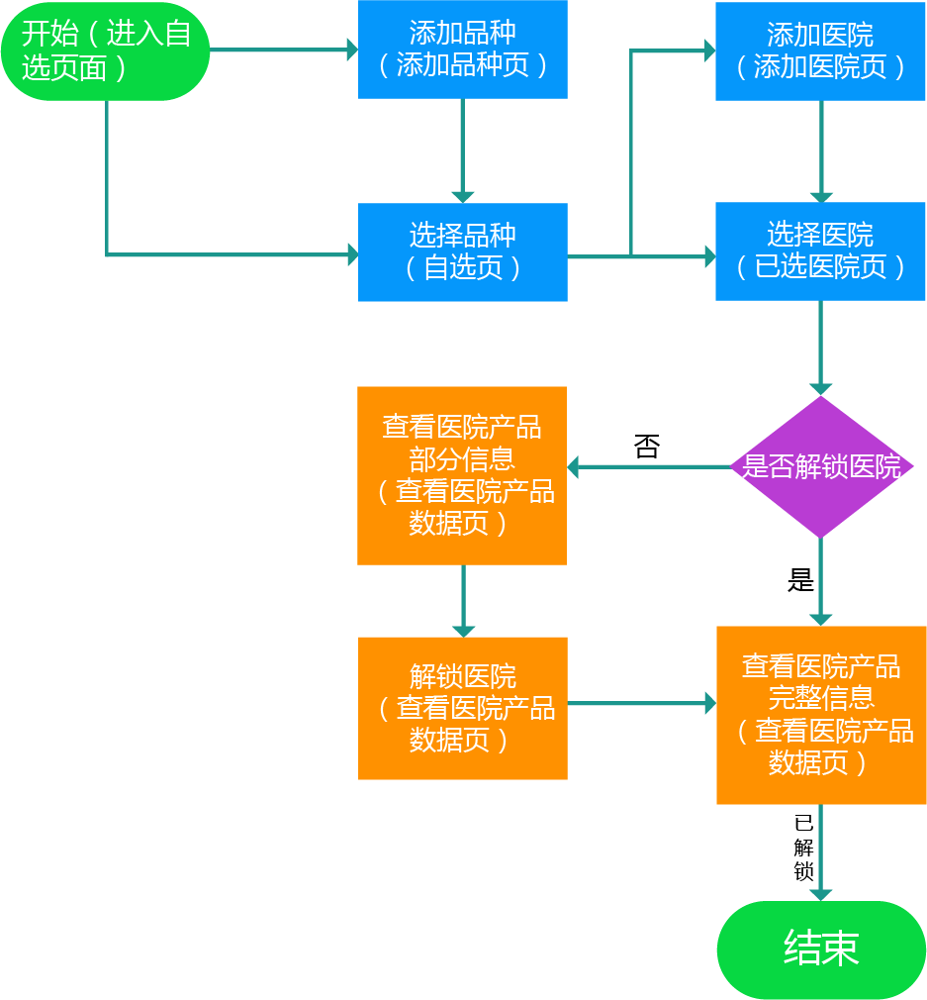
点击左上角功能按钮【添加】进入添加品种页面，点击品种添加按钮【+】可将品种添加至自选列表。
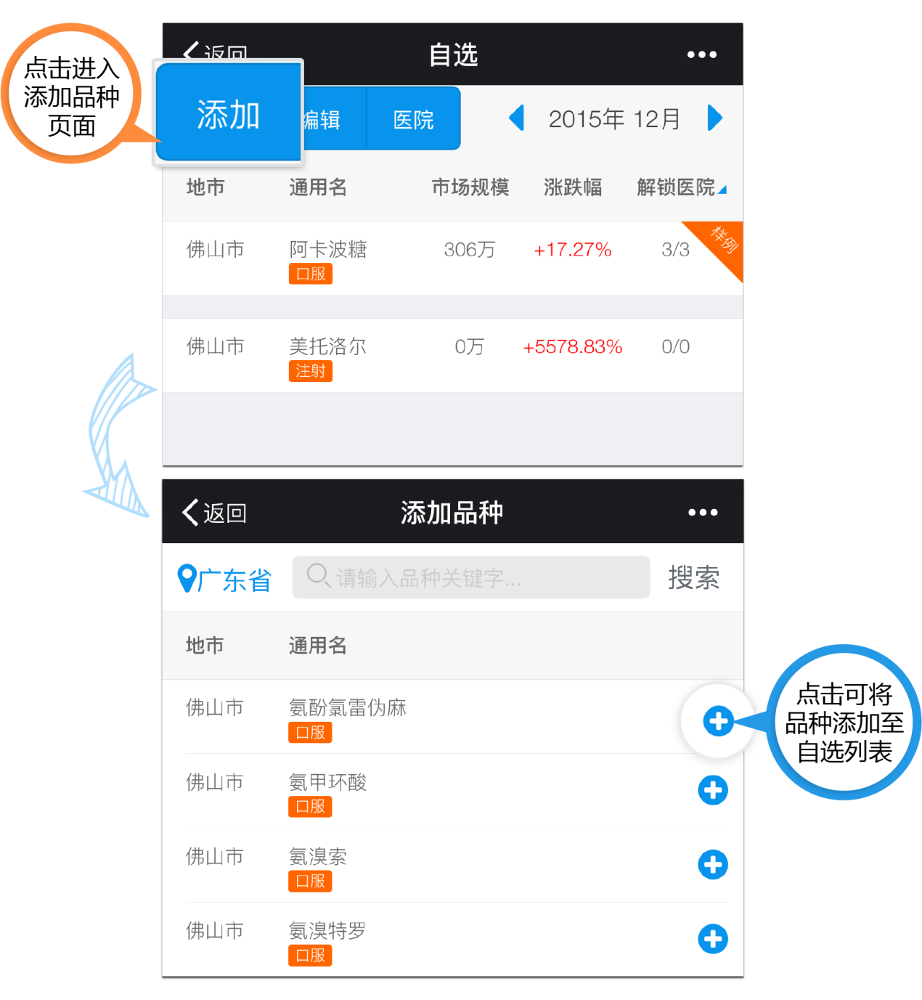
自选页面点击某一品种进入该品种下的已选医院列表，点击【添加】跳转至添加医院页面，点击【+】选择医院可将医院添加至已选医院列表。
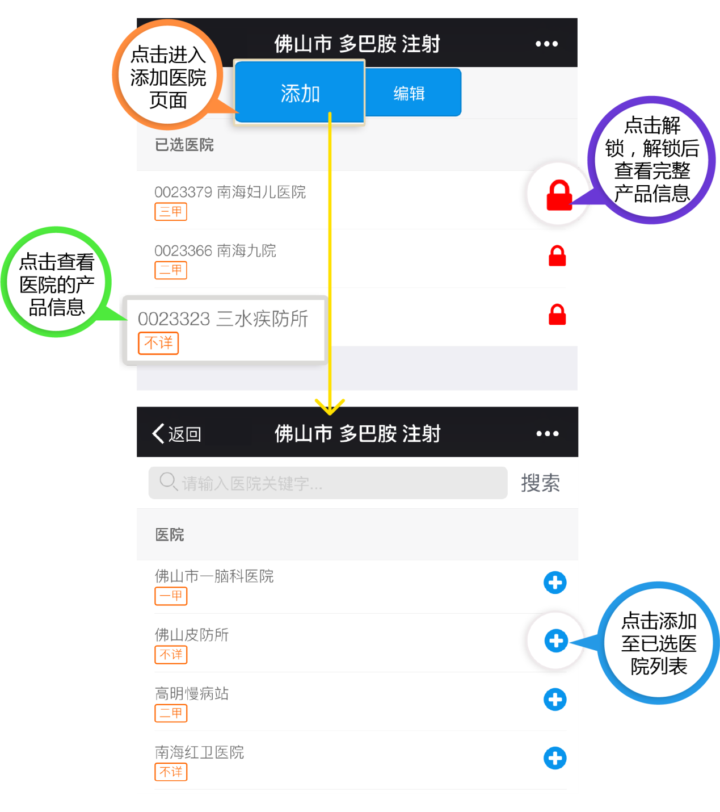
通过”已选医院列表“或“医院列表“页面可进入查看医院产品信息页面，未解锁状态显示部分信息，点击【解锁】按钮解锁后可查看产品完整信息。
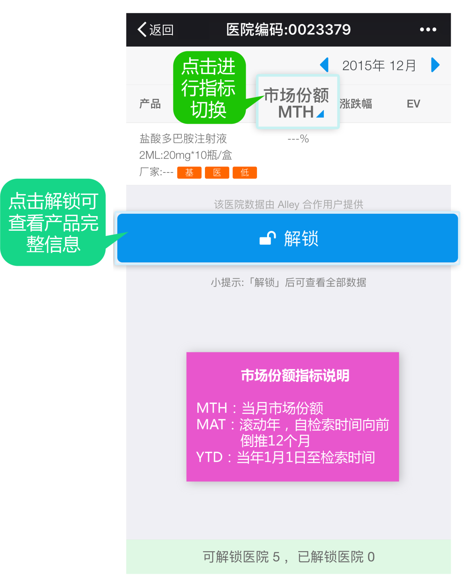
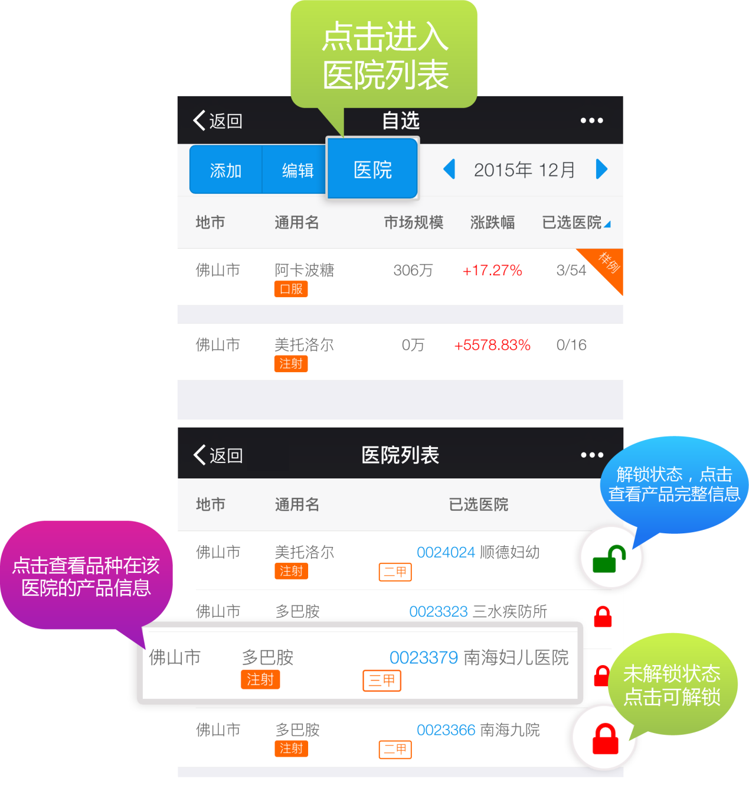
如有其它问题，请在微信公众号内进行留言，我们的客服会及时回复。